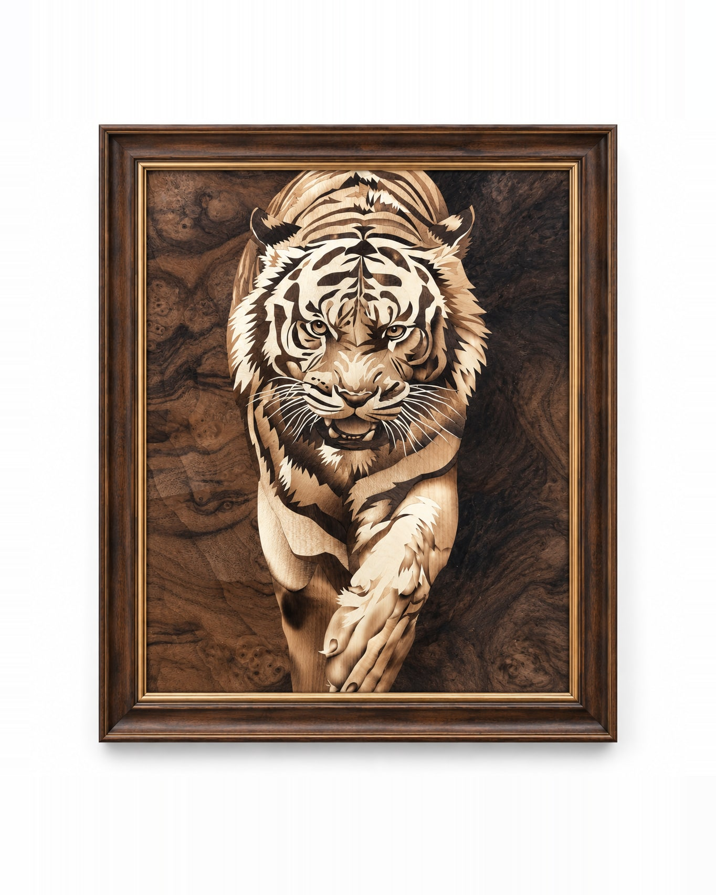
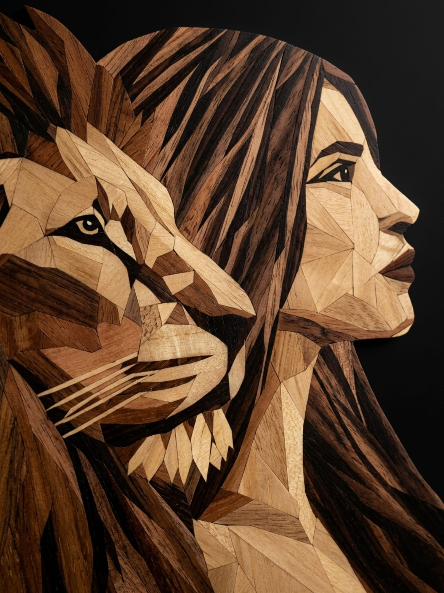

Obras originales,
disponibles hoy
Cada pieza que aparece a continuación es una obra original, cortada a mano en chapa de madera natural. Las piezas marcadas como «No está a la venta» se muestran como referencia; todas las demás pueden adquirirse hoy.

Black Woman
Un estudio de luminosidad y dignidad. El fresno claro da paso a la sombra del nogal: una calidez que ninguna pintura puede reproducir.
King of Ararat
Arraigada en la memoria armenia y en la montaña sagrada. Wengué oscuro y amboina: una identidad sostenida sin nostalgia.
Strength in Harmony
Dos presencias. Dos direcciones de veta. Un doble retrato que insiste en el vínculo que representa.
The Lion Within
850 piezas. Una fuerza contenida: no el león que ruge, sino el que reposa con plena conciencia.
Geometric German Shepherd
125 fragmentos de madera cortados con precisión. Fragmentación y reconstrucción de la forma: identidad y fuerza plasmadas en madera natural.
Eagle
Un águila en vuelo, cortada a mano en chapa de madera natural: plumas superpuestas sobre un fondo de montaña.
Tiger
Un tigre que surge de un fondo oscuro de madera veteada, con el pelaje rayado cortado a mano en chapa de madera natural.
Ren
Un retrato de perro en chapas de madera cálidas y claras, sobre un fondo de dos tonos.
Rose
Una sola rosa en chapas de madera claras sobre un fondo oscuro de veta recta, en un marco blanco ornamentado.
The Lion Within — marquetería en chapa de madera, en su emplazamiento
Cada pieza, a mano
Cada chapa se selecciona, se corta a mano y se coloca una a una. La dirección de la veta, el tono y la textura de cada pieza contribuyen al retrato final.


Algunas obras no están a la venta
Algunas piezas se conservan de forma permanente en la colección privada del artista: hitos en la evolución de VaCa Marquetry. Se presentan en exposiciones, pero no están disponibles para su adquisición.
Ver la Colección privada →Encargue el retrato
de un ser querido
Cortado a mano en madera, hecho enteramente para usted — empezando por una vista previa privada de cortesía, preparada en 24 horas.
Encargar un retrato a medida